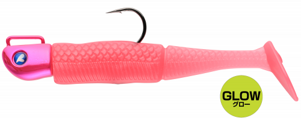
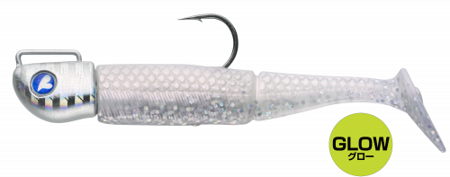
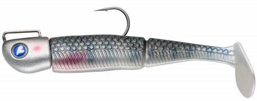
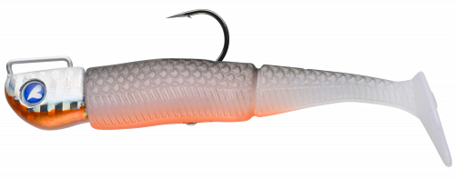

ジョルムーア
（JOL MOORE）
ジョルムーアはBlueBlue（ブルーブルー）のジグヘッドリグです。
ジグヘッドと3インチワームのセットで、バイトによるワームのズレを極限まで減らすデュアルホールドシステム（PAT.P）を搭載。力強いアクションと艶めかしい動きで、多種多様な魚を誘います。腹部のアイにブレードなどを付けてカスタマイズすることもできます。

画像出典:BlueBlue公式HP
スペック
- メーカー
- BlueBlue（ブルーブルー）
- タイプ
- ジグヘッドリグ（ジグヘッド＋ワーム）
- ジグヘッド
- 8g／12g／15g／18g
- ワーム
- 3インチ
- 入数
- ジグヘッド＋ワーム2セット（予備ワーム2本付き）
- ターゲット
- シーバス・ヒラメ・マゴチ・根魚ほか
- 価格
- 1,700円〜1,750円（税別）
▼今すぐチェック
ジョルムーアの特徴
ワームがズレにくく、力強いアクションで多魚種を誘うジグヘッドリグ
-
デュアルホールドシステム
ワームを完璧にセッティングでき、バイトによるワームのズレを極限まで減らすデュアルホールドシステム（PAT.P）を搭載。ズレを直す手間が減り、テンポよく釣りを続けられます。
-
力強いアクションと艶めかしさ
力強いアクションと、それに伴う艶めかしい動きで、シーバスやヒラメ、根魚まで多種多様な魚を誘います。
-
ブレードでカスタマイズできる
腹部のアイにブレードなどを付けられるので、状況に応じてアピールを足すことができます。
ジョルムーアの使い方
基本はただ巻き。着水後に狙いのレンジまで沈め、一定の速度で巻いてきます。
ボトム付近を狙うときは、リフト＆フォールでワームのアクションとフォールを組み合わせて誘いましょう。反応がないときは、腹部アイにブレードを付けてアピールを強めるのも手です。
ジョルムーアの得意な状況
港湾・河川のシーバス、サーフのヒラメ・マゴチ、堤防の根魚など、ワームで探りたい場面全般。ハードルアーに反応が薄いときや、ボトム付近をじっくり探りたいときに向いています。
ワンポイント
8gは港湾や浅い場所、15g・18gはサーフや潮の速い場所と、水深と飛距離で重さを選びましょう。
ジョルムーアのウェイトの使い分け
| モデル | 全長／自重 | 得意な場面 |
|---|---|---|
| 8g | 8g | 港湾や浅い場所、ゆっくり見せたいときに |
| 12g | 12g | 港湾〜河口の基準ウェイト |
| 15g | 15g | サーフや少し深い場所に |
| 18g | 18g | 遠投が必要な場所や、潮の速い場所に |
同じBlueBlueのジョルティ（4インチ／15〜30g）は、もっと大きなシルエットで遠投したいときに使い分けられます。
人気カラー
公式ラインナップから4色を紹介します（カラー名は公式の表記のまま）。

#03 フルフルピーチピーチ系のパステルカラー。朝夕のマズメや濁り気味のときに。

#04 フラッシュグローグロー系のカラー。夜や濁りの強いときに。

#09 ザンダーナチュラル系のカラー。澄み潮でベイトに似せたいときに。

#16 ホットオリーブオリーブ系のカラー。根魚やボトム狙いで、目立ちすぎずに見せたいときに。
画像出典:BlueBlue公式HP
ジョルムーアに似ているルアー
-
 ジョルティ
ブルーブルー
詳細はこちら＞
ジョルティ
ブルーブルー
詳細はこちら＞
4インチ・15〜30gのジグヘッドリグ。同じBlueBlueで、もっと大きなシルエットで遠投したいときに。
-
 RJ-10 ローリングジグヘッド
コアマン
詳細はこちら＞
RJ-10 ローリングジグヘッド
コアマン
詳細はこちら＞
総13gのローリングジグヘッド。ただ巻きで、ローリングアクションで見せたいときに。
-
 VJ-16
コアマン
詳細はこちら＞
VJ-16
コアマン
詳細はこちら＞
ヘッド16gのバイブレーションジグヘッド。もっと強い波動で広く探りたいときに。